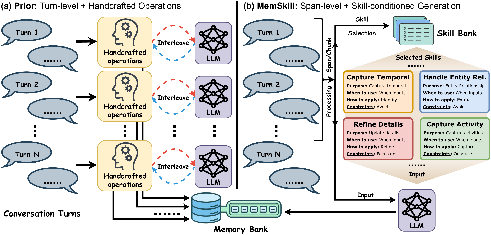
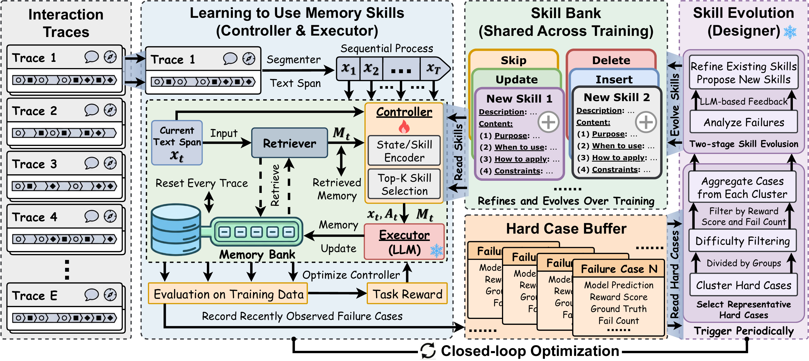

Learn what to use
Select context-relevant skills from a shared bank, guided by downstream task feedback.
Memory is a skill. Let agents learn it.
A framework that learns which memory skills to use, and evolves the skills themselves through experience.
The controller learns to select relevant skills for each text span and its retrieved memories.

1Nanyang Technological
University
2University of Illinois
Urbana-Champaign
3University of Illinois
Chicago
4Tsinghua
University
Most agent memory systems rely on fixed, hand-designed operations. MemSkill introduces a different approach: learnable, reusable memory skills that guide how an agent extracts, consolidates, and revises information.
Instead of applying a fixed procedure after every turn, MemSkill processes larger spans of interaction history and composes a small set of relevant skills to construct memory in one pass.
The skill bank is a living component. Skills are refined and expanded from hard cases, allowing the system to improve both how it uses skills and what those skills are. The result is adaptable memory across long conversations, document-based reasoning, and embodied interaction.
Select context-relevant skills from a shared bank, guided by downstream task feedback.
Compose selected skills over a text span to produce structured memory updates.
Turn recurring failures into refined skills and new ways of constructing memory.

A controller, an executor, and a designer work together to improve memory construction in a closed loop.
Uses the current text span and retrieved memories to select a small set of relevant skills. Task rewards improve its selection policy.
Reinforcement learningApplies the selected skills with an LLM to produce structured memory updates in a single step, span by span.
Skill-conditioned generationReviews representative hard cases, refines existing skills, and proposes new ones to expand the shared skill bank.
Evolution through feedback
From conversational recall to embodied tasks. Trained with LLaMA, with skills transferred directly to Qwen without additional training.
+8.27% relative improvement vs. best compared baseline
+7.88% relative improvement vs. best compared baseline
+3.26% relative improvement vs. best compared baseline
| Method | LoCoMo | LongMemEval † | ALFWorld ‡ | |||
|---|---|---|---|---|---|---|
| F1 ↑ | L-J ↑ | F1 ↑ | L-J ↑ | SEEN SR ↑ | UNSEEN SR ↑ | |
| No-Memory | — | — | — | — | 62.14 | 73.88 |
| CoN | 30.86 | 41.72 | 30.78 | 56.44 | 75.00 | 80.60 |
| ReadAgent | 28.63 | 38.25 | 24.48 | 42.62 | 62.86 | 71.64 |
| MemoryBank | 36.80 | 44.43 | 30.56 | 41.96 | 60.71 | 66.42 |
| A-MEM | 39.39 | 49.71 | 25.83 | 38.04 | 62.86 | 70.15 |
| Mem0 | 25.48 | 34.58 | 30.25 | 46.81 | 74.29 | 81.34 |
| LangMem | 30.91 | 35.82 | 18.36 | 24.35 | 72.86 | 79.85 |
| MemoryOS | 41.39 | 48.64 | 17.59 | 39.83 | 57.86 | 65.67 |
| MemSkillOURS | 44.21 | 53.82 | 31.12 | 60.89 | 77.14 | 83.58 |
+6.24% relative improvement vs. best compared baseline
+30.74% relative improvement vs. best compared baseline
+9.82% relative improvement vs. best compared baseline
| Method | LoCoMo | LongMemEval † | ALFWorld ‡ | |||
|---|---|---|---|---|---|---|
| F1 ↑ | L-J ↑ | F1 ↑ | L-J ↑ | SEEN SR ↑ | UNSEEN SR ↑ | |
| No-Memory | — | — | — | — | 63.57 | 60.45 |
| CoN | 38.46 | 50.96 | 29.19 | 44.06 | 77.14 | 70.90 |
| ReadAgent | 25.89 | 34.26 | 24.13 | 42.25 | 73.57 | 65.67 |
| MemoryBank | 29.56 | 44.15 | 8.45 | 26.37 | 63.57 | 52.24 |
| A-MEM | 36.43 | 50.30 | 13.84 | 36.59 | 55.71 | 54.48 |
| Mem0 | 23.29 | 33.68 | 27.36 | 46.20 | 71.43 | 64.93 |
| LangMem | 28.17 | 32.94 | 18.35 | 23.86 | 73.57 | 64.18 |
| MemoryOS | 39.86 | 47.37 | 15.97 | 39.25 | 62.14 | 50.75 |
| MemSkillOURS | 42.08 | 54.14 | 25.29 | 60.40 | 85.71 | 76.87 |
Metrics. F1: token-level F1; L-J: LLM-judge score; SR: success rate (%). ↑ Higher is better; — not reported. Bold marks the best score per column.
Evaluation. † MemSkill on LongMemEval uses LoCoMo-trained skills without further training. Qwen results transfer from LLaMA without retraining. ‡ ALFWorld uses in-context demonstrations.
The LoCoMo-trained skill bank transfers directly to HotpotQA: a shift from dialogue to document-centric QA. Compare 50, 100, and 200 concatenated documents, and explore how the number of selected skills affects performance.
See the transfer studyY-axis: 55–75 · LLaMA 3.3 70B · No HotpotQA training · Paper v2, Fig. 3
Evolved skills capture reusable instructions for constructing memory. Explore behaviors that emerge from conversation and embodied tasks.
Read the research, explore the implementation, and experiment with learned memory skills.
Method, experiments & analysis
Implementation & getting started
Pretrained controller weights
If MemSkill is useful in your research, please consider citing our paper.
@article{zhang2026memskill,
title = {MemSkill: Learning and Evolving Memory Skills
for Self-Evolving Agents},
author = {Zhang, Haozhen and Long, Quanyu and Bao, Jianzhu
and Feng, Tao and Zhang, Weizhi and Yue, Haodong
and Wang, Wenya},
journal = {arXiv preprint arXiv:2602.02474},
year = {2026}
}